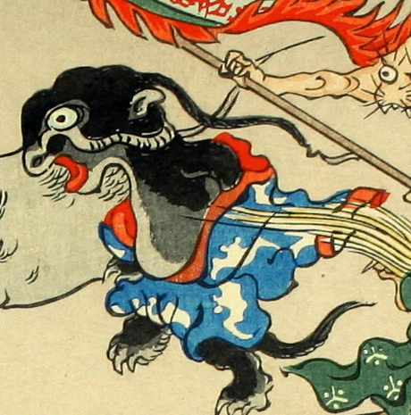

頭頂から長いヒレのようなものを伸ばし、大きな口を開けて赤い舌をのぞかせている。肌の色は黒く、青地に白雲のような模様の着物を身につけている。
著作者：洒落斎芳幾（歌川芳幾）／出典：親書誌：U426_nichibunken_0075：滑稽倭日史記；コッケイヤマトシキ／日付：2007／資源識別子：U426_nichibunken_0075_0009_0000
Copyright (c)2010- International Research Center for Japanese Studies, Kyoto, Japan. All rights reserved.